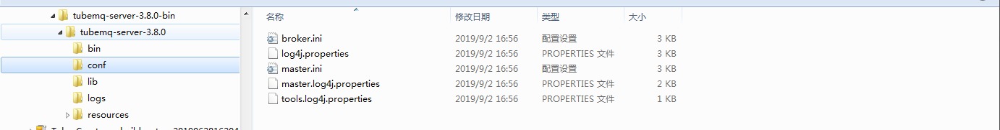

文档
文档
- 用户手册
TubeMQ服务端配置文件说明：
TubeMQ服务端包括Master和Broker共2个模块，Master又包含供外部页面访问的Web前端模块（该部分存放在resources中），考虑到实际部署时2个模块常常部署在同1台机器中，TubeMQ将2个模块3个部分的内容打包在一起交付给运维使用；客户端则不包含服务端部分的lib包单独交付给业务使用。
Master与Broker采用ini配置文件格式，相关配置文件分别放置在tubemq-server-3.8.0/conf/目录的master.ini和broker.ini文件中：

他们的配置是按照配置单元集合来定义的，Master配置由必选的[master]、[zookeeper]、[bdbStore]和可选的[tlsSetting]一共4个配置单元组成，Broker配置由必选的[broker]、[zookeeper]和可选的[tlsSetting]一共3个配置单元组成；实际使用时，大家也可将两个配置文件内容合并放置为一个ini文件。
Master除了后端系统配置文件外，还在resources里存放了Web前端页面模块，resources的根目录velocity.properties文件为Master的Web前端页面配置文件。

配置项详情：
master.ini文件中关键配置内容说明：
| 配置单元 | 配置项 | 是否必选 | 值类型 | 配置说明 |
|---|---|---|---|---|
| [master] | Master系统运行主配置单元，必填单元，值固定为"[master]" | |||
| [master] | hostName | 是 | String | Master对外服务的主机地址，必填项，必须在网卡中已配置，处于启用状态，非回环且不能为127.0.0.1的IP |
| port | 否 | int | Master监听的端口，可选项，缺省值为8715 | |
| webPort | 否 | int | Master Web控制台的访问端口，缺省值为8080 | |
| webResourcePath | 是 | String | Master Web Resource部署绝对路径，必填项，该值设置不正确时Web页面将不能正常显示 | |
| confModAuthToken | 否 | String | 通过Master的Web或API做变更操作（包括增、删、改配置，以及变更Master及管理的Broker状态）时操作者需要提供的授权Token，该值可选，缺省为"ASDFGHJKL" | |
| firstBalanceDelayAfterStartMs | 否 | long | Master启动至首次开始Rebalance的时间间隔，可选项，缺省30000毫秒 | |
| consumerBalancePeriodMs | 否 | long | Master对消费组进行Rebalance的均衡周期，可选项，缺省60000毫秒，当集群规模较大时，请调大该值 | |
| consumerHeartbeatTimeoutMs | 否 | long | 消费者心跳超时周期，可选项，缺省30000毫秒，当集群规模较大时，请调大该值 | |
| producerHeartbeatTimeoutMs | 否 | long | 生产者心跳超时周期，可选项，缺省30000毫秒，当集群规模较大时，请调大该值 | |
| brokerHeartbeatTimeoutMs | 否 | long | Broker心跳超时周期，可选项，缺省30000毫秒，当集群规模较大时，请调大该值 | |
| socketRecvBuffer | 否 | long | Socket接收Buffer缓冲区SO_RCVBUF大小,单位字节, 负数为不做设置以缺省值为准 | |
| socketSendBuffer | 否 | long | Socket发送Buffer缓冲区SO_SNDBUF大小,单位字节, 负数为不做设置以缺省值为准 | |
| maxAutoForbiddenCnt | 否 | int | Broker出现IO故障时最大允许Master自动下线Broker个数，可选项，缺省为5，建议该值不超过集群内Broker总数的10% | |
| startOffsetResetCheck | 否 | boolean | 是否启用客户端Offset重置功能的检查功能，可选项，缺省为false | |
| needBrokerVisitAuth | 否 | boolean | 是否启用Broker访问鉴权，缺省为false，如果为true，则Broker上报的消息里必须携带正确的用户名及签名信息 | |
| visitName | 否 | String | Broker访问鉴权的用户名，缺省为空字符串，在needBrokerVisitAuth为true时该值必须存在，该值必须与broker.ini里的visitName字段值同 | |
| visitPassword | 否 | String | Broker访问鉴权的密码，缺省为空字符串，在needBrokerVisitAuth为true时该值必须存在，该值必须与broker.ini里的visitPassword字段值同 | |
| startVisitTokenCheck | 否 | boolean | 是否启用客户端visitToken检查，缺省为false | |
| startProduceAuthenticate | 否 | boolean | 是否启用生产端用户认证，缺省为false | |
| startProduceAuthorize | 否 | boolean | 是否启用生产端生产授权认证，缺省为false | |
| startConsumeAuthenticate | 否 | boolean | 是否启用消费端用户认证，缺省为false | |
| startConsumeAuthorize | 否 | boolean | 是否启用消费端消费授权认证，缺省为false | |
| maxGroupBrokerConsumeRate | 否 | int | 集群Broker数与消费组里成员数的最大比值，可选项，缺省为50，50台Broker集群里允许1个消费组最少启动1个客户端消费 | |
| metaDataPath | 否 | String | Metadata存储路径，可以是绝对路径、或者相对TubeMQ安装目录（"$BASE_DIR"）的相对路径。缺省为"var/meta_data" | |
| [zookeeper] | Master对应的TubeMQ集群存储Offset的ZooKeeper集群相关信息，必填单元，值固定为"[zookeeper]" | |||
| [zookeeper] | zkServerAddr | 否 | String | zk服务器地址，可选配置，缺省为"localhost:2181" |
| zkNodeRoot | 否 | String | zk上的节点根目录路径，可选配置，缺省为"/tubemq" | |
| zkSessionTimeoutMs | 否 | long | zk心跳超时，单位毫秒，默认30秒 | |
| zkConnectionTimeoutMs | 否 | long | zk连接超时时间，单位毫秒，默认30秒 | |
| zkSyncTimeMs | 否 | long | zk数据同步时间，单位毫秒，默认5秒 | |
| zkCommitPeriodMs | 否 | long | Master缓存数据刷新到zk上的时间间隔，单位毫秒，默认5秒 | |
| [replication] | 集群数据复制的相关配置，用于实现元数据多节点热备，必填单元，值固定为"[replication]" | |||
| [replication] | repGroupName | 否 | String | 集群名，所属主备Master节点值必须相同，可选字段，缺省为"tubemqMasterGroup" |
| repNodeName | 是 | String | 所属Master在集群中的节点名，该值各个节点必须不重复，必填字段 | |
| repNodePort | 否 | int | 节点复制通讯端口，可选字段，缺省为9001 | |
| repHelperHost | 否 | String | 集群启动时的主节点，可选字段，缺省为"127.0.0.1:9001" | |
| metaLocalSyncPolicy | 否 | int | 数据节点本地保存方式，该字段取值范围[1，2，3]，缺省为1：其中1为数据保存到磁盘，2为数据只保存到内存，3为只将数据写文件系统buffer，但不刷盘 | |
| metaReplicaSyncPolicy | 否 | int | 数据节点同步保存方式，该字段取值范围[1，2，3]，缺省为1：其中1为数据保存到磁盘，2为数据只保存到内存，3为只将数据写文件系统buffer，但不刷盘 | |
| repReplicaAckPolicy | 否 | int | 节点数据同步时的应答策略，该字段取值范围为[1，2，3]，缺省为1：其中1为超过1/2多数为有效，2为所有节点应答才有效；3为不需要节点应答 | |
| repStatusCheckTimeoutMs | 否 | long | 节点状态检查间隔，可选字段，单位毫秒，缺省为10秒 | |
| [bdbStore] | 已弃用，请在"[replication]"单元进行相关配置。Master所属BDB集群的相关配置，Master采用BDB进行元数据存储以及多节点热备，必填单元，值固定为"[bdbStore]" | |||
| [bdbStore] | bdbRepGroupName | 是 | String | BDB集群名，所属主备Master节点值必须相同，必填字段 |
| bdbNodeName | 是 | String | 所属Master在BDB集群中的节点名，该值各个BDB节点必须不重复，必填字段 | |
| bdbNodePort | 否 | int | BDB节点通讯端口，可选字段，缺省为9001 | |
| bdbEnvHome | 是 | String | BDB数据存储路径，必填字段 | |
| bdbHelperHost | 是 | String | BDB集群启动时的主节点，必填字段 | |
| bdbLocalSync | 否 | int | BDB数据节点本地保存方式，该字段取值范围[1，2，3]，缺省为1：其中1为数据保存到磁盘，2为数据只保存到内存，3为只将数据写文件系统buffer，但不刷盘 | |
| bdbReplicaSync | 否 | int | BDB数据节点同步保存方式，该字段取值范围[1，2，3]，缺省为1：其中1为数据保存到磁盘，2为数据只保存到内存，3为只将数据写文件系统buffer，但不刷盘 | |
| bdbReplicaAck | 否 | int | BDB节点数据同步时的应答策略，该字段取值范围为[1，2，3]，缺省为1：其中1为超过1/2多数为有效，2为所有节点应答才有效；3为不需要节点应答 | |
| bdbStatusCheckTimeoutMs | 否 | long | BDB状态检查间隔，可选字段，单位毫秒，缺省为10秒 | |
| [tlsSetting] | Master采用TLS进行传输层数据加密，启用TLS时通过该配置单元提供相关的设置，可选单元，值固定为"[tlsSetting]" | |||
| [tlsSetting] | tlsEnable | 否 | boolean | 是否启用TLS功能，可选配置，缺省为false |
| tlsPort | 否 | int | Master的TLS端口号，可选配置，缺省为8716 | |
| tlsKeyStorePath | 否 | String | TLS的keyStore文件的绝对存储路径+keyStore文件名，在启动TLS功能时，该字段必填且不能为空 | |
| tlsKeyStorePassword | 否 | String | TLS的keyStorePassword文件的绝对存储路径+keyStorePassword文件名，在启动TLS功能时，该字段必填且不能为空 | |
| tlsTwoWayAuthEnable | 否 | boolean | 是否启用TLS双向认证功能，可选配置，缺省为false | |
| tlsTrustStorePath | 否 | String | TLS的TrustStore文件的绝对存储路径+TrustStore文件名，在启动TLS功能且启用双向认证时，该字段必填且不能为空 | |
| tlsTrustStorePassword | 否 | String | TLS的TrustStorePassword文件的绝对存储路径+TrustStorePassword文件名，在启动TLS功能且启用双向认证时，该字段必填且不能为空 |
Master的前台配置文件velocity.properties中关键配置内容说明：
| 配置单元 | 配置项 | 是否必选 | 值类型 | 配置说明 |
|---|---|---|---|---|
| file.resource.loader.path | 是 | String | Master的Web的模板绝对路径，该部分为实际部署Master时的工程绝对路径+/resources/templates，该配置要与实际部署相吻合，配置失败会导致Master前端页面访问失败。 |
broker.ini文件中关键配置内容说明：
| 配置单元 | 配置项 | 是否必选 | 值类型 | 配置说明 |
|---|---|---|---|---|
| [broker] | Broker系统运行主配置单元，必填单元，值固定为"[broker]" | |||
| [broker] | brokerId | 是 | int | 服务器唯一标志，必填字段，可设为0；设为0时系统将默认取本机IP转化为int值再取abs绝对值，避免brokerId为负数，如果使用环境的IP比较复杂存在生成的brokerId值冲突时，则需要指定brokerId值进行设置。 |
| hostName | 是 | String | Broker对外服务的主机地址，必填项，必须在网卡中已配置，处于启用状态，非回环且不能为127.0.0.1的IP | |
| port | 否 | int | Broker监听的端口，可选项，缺省值为8123 | |
| webPort | 否 | int | Broker的http管理访问端口,可选项,缺省为8081 | |
| masterAddressList | 是 | String | Broker所属集群的Master地址列表，必填字段，格式必须是ip1:port1,ip2:port2,ip3:port3 | |
| primaryPath | 是 | String | Broker存储消息的绝对路径，必选字段 | |
| maxSegmentSize | 否 | int | Broker存储消息Data内容的文件大小，可选字段，缺省512M，最大1G | |
| maxIndexSegmentSize | 否 | int | Broker存储消息Index内容的文件大小，可选字段，缺省18M，约70W条消息每文件 | |
| transferSize | 否 | int | Broker允许每次传输给客户端的最大消息内容大小，可选字段，缺省为512K | |
| consumerRegTimeoutMs | 否 | long | consumer心跳超时时间，可选项，单位毫秒，默认30秒 | |
| socketRecvBuffer | 否 | long | Socket接收Buffer缓冲区SO_RCVBUF大小,单位字节,负数为不做设置以缺省值为准 | |
| socketSendBuffer | 否 | long | Socket发送Buffer缓冲区SO_SNDBUF大小,单位字节,负数为不做设置以缺省值为准 | |
| tcpWriteServiceThread | 否 | int | Broker支持TCP生产服务的socket worker线程数，可选字段，缺省为所在机器的2倍CPU个数 | |
| tcpReadServiceThread | 否 | int | Broker支持TCP消费服务的socket worker线程数，可选字段，缺省为所在机器的2倍CPU个数 | |
| logClearupDurationMs | 否 | long | 消息文件的老化清理周期, 单位为毫秒, 缺省为3分钟进行一次日志清理操作,最低1分钟 | |
| logFlushDiskDurMs | 否 | long | 批量检查消息持久化到文件的检查周期,单位为毫秒, 缺省为20秒进行一次全量的检查及刷盘 | |
| visitTokenCheckInValidTimeMs | 否 | long | visitToken检查时允许Broker注册后延迟检查的时长，单位ms,缺省120000，取值范围[60000，300000] | |
| visitMasterAuth | 否 | boolean | 是否启用上报Master鉴权，缺省为false，如果为true，则会在上报Master的信令里加入用户名及签名信息 | |
| visitName | 否 | String | 访问Master的用户名，缺省为空字符串，在visitMasterAuth为true时该值必须存在，该值必须与master.ini里的visitName字段值同 | |
| visitPassword | 否 | String | 访问Master的密码，缺省为空字符串，在visitMasterAuth为true时该值必须存在，该值必须与master.ini里的visitPassword字段值同 | |
| logFlushMemDurMs | 否 | long | 批量检查消息内存持久化到文件的检查周期,单位为毫秒, 缺省为10秒进行一次全量的检查及刷盘 | |
| [zookeeper] | Broker对应的Tube MQ集群存储Offset的ZooKeeper集群相关信息，必填单元，值固定为"[zookeeper]" | |||
| [zookeeper] | zkServerAddr | 否 | String | zk服务器地址，可选配置，缺省为"localhost:2181" |
| zkNodeRoot | 否 | String | zk上的节点根目录路径，可选配置，缺省为"/tubemq" | |
| zkSessionTimeoutMs | 否 | long | zk心跳超时，单位毫秒，默认30秒 | |
| zkConnectionTimeoutMs | 否 | long | zk连接超时时间，单位毫秒，默认30秒 | |
| zkSyncTimeMs | 否 | long | zk数据同步时间，单位毫秒，默认5秒 | |
| zkCommitPeriodMs | 否 | long | Broker缓存数据刷新到zk上的时间间隔，单位毫秒，默认5秒 | |
| zkCommitFailRetries | 否 | int | Broker刷新缓存数据到Zk失败后的最大重刷次数 | |
| [tlsSetting] | Master采用TLS进行传输层数据加密，启用TLS时通过该配置单元提供相关的设置，可选单元，值固定为"[tlsSetting]" | |||
| [tlsSetting] | tlsEnable | 否 | boolean | 是否启用TLS功能，可选配置，缺省为false |
| tlsPort | 否 | int | Broker的TLS端口号，可选配置，缺省为8124 | |
| tlsKeyStorePath | 否 | String | TLS的keyStore文件的绝对存储路径+keyStore文件名，在启动TLS功能时，该字段必填且不能为空 | |
| tlsKeyStorePassword | 否 | String | TLS的keyStorePassword文件的绝对存储路径+keyStorePassword文件名，在启动TLS功能时，该字段必填且不能为空 | |
| tlsTwoWayAuthEnable | 否 | boolean | 是否启用TLS双向认证功能，可选配置，缺省为false | |
| tlsTrustStorePath | 否 | String | TLS的TrustStore文件的绝对存储路径+TrustStore文件名，在启动TLS功能且启用双向认证时，该字段必填且不能为空 | |
| tlsTrustStorePassword | 否 | String | TLS的TrustStorePassword文件的绝对存储路径+TrustStorePassword文件名，在启动TLS功能且启用双向认证时，该字段必填且不能为空 |